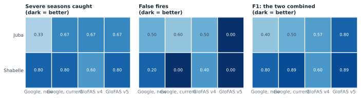
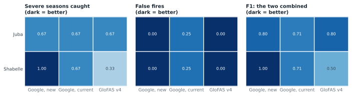
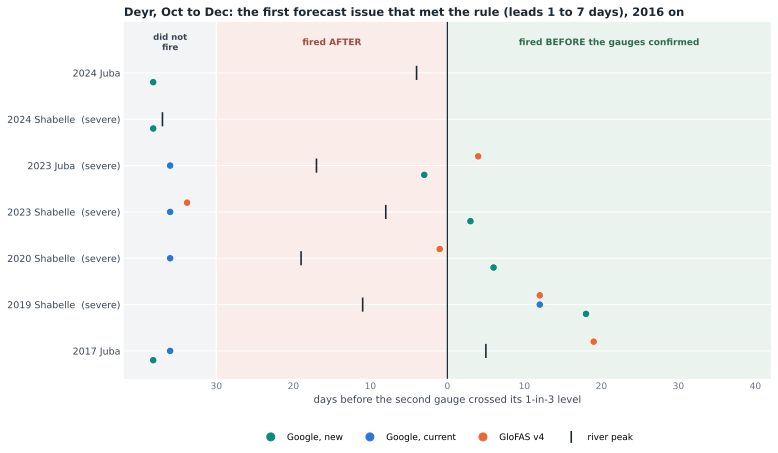
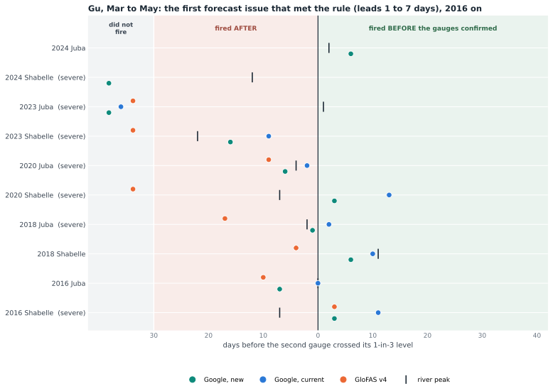

A season is severe when two gauges on the river reach their own 1-in-5 level, a flood at 1-in-3. A model fires when the trigger rule is met in its record: three of four Juba points, or two of three Shabelle points, over their own levels on the same day. 1999 to 2023 for every source, to 2025 for the new model.
Would Google have carried Deyr?
Shabelle: yes. It catches 4 of 5 against v4's 3, with 1 false fire against 2, and it sees the 2023 flood that v4 never did. Today's Google model matches it on the Shabelle (4 of 5, 0 false fires): it misses 2020 where the new one misses 2006.

One row per model and river, one cell per season: did it fire, and what did the gauges do.

Does it keep Gu?


Timing against the gauges
Every season in which a river flooded. Zero is the day the second gauge crossed its 1-in-3 level. Green side: the model fired before the gauges confirmed. Red side: after. Grey column: it never fired that season.

Deyr median: the new model fires +1 days before the gauges confirm (over 6 river-seasons), GloFAS v4 +5 (over 6). GloFAS is earlier on the Juba. On the Shabelle in 2023 the new model is the one that fires at all.

Gu median: the new model -5 days (over 8), the Google model running today -2 (over 6).
The same, read from the forecasts
What the operator would have seen: the first forecast issue on which the rule was met at leads 1 to 7 days. Forecast archives start in 2016 for both Google models; GloFAS v5 has none.


Three seasons in full
All seven points. The gauge as a share of its 1-in-3 level, each model at the same point as a share of its own trigger level. Above the dotted 100% line means over the level. Lines above 400% are cut off.

Deyr 2023. Juba: GloFAS v4 fired 21 Oct, the new model 03 Nov, the second gauge crossed 25 Oct. Shabelle: only the new model fired, 09 Nov; the gauges crossed 06 Nov.

Deyr 2024: the new model did not fire, gauges: severe. The Shabelle gauges crossed 18 Oct.

Gu 2024: the new model fired on the Juba, gauges: severe. 2025: Deyr did not fire, gauges: nothing; Gu did not fire, gauges: nothing.
Station by station
The same scores for each point on its own, against that gauge's own levels.


The numbers are on a different scale
At the same points the new model's flows are several times the current Google model's. Every Google-based level, the Gu triggers and the 1-in-6 line quoted at Luuq included, would have to be refitted.

Source: Google Runoff Reanalysis and Reforecast, November 2026 release
(reanalysis 1981 to 2025, reforecast 2016 to 2025 at leads 0 to 10 days), one HydroBasins outlet per station. Levels are fitted on each
model's own 1999 to 2023 seasonal maxima. Gauges: SWALIM, to July 2026. Forecast issues use leads 1 to 7 days, lead 1 being the issue day.
The dates behind the charts are in data.json beside this page; the seven-station extracts are on the team's storage.